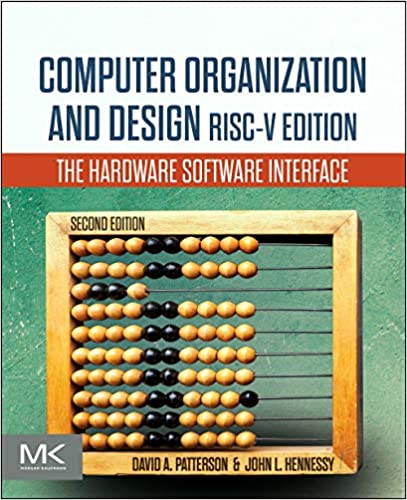

[2024 Fall] Computer Architecture
Course Information
| Course | Computer Architecture | Department | Artificial Intelligence / Computer Science and Engineering |
|---|---|---|---|
| Office Hours | (Tue) 17:00 ~ 19:00 | Course No. and Class | 39145-01 / 20493-05 |
| Hours | 3.0 | Academic Credit | 3.0 |
| Professor | Yoon, Myung Kuk | Office | Jinseonmi-Gwan, 213 |
| Telephone | (82)-2-3277-3819 | myungkuk.yoon at ewha.ac.kr | |
| Value of Competence | Pursuit of Knowledge(80), Creative Convergence(20) | Keyword | CPU Design, Memory Design, System I/O |
| Class Time | (Tue) 15:30 ~ 16:45 (Thu) 12:30 ~ 13:45 |
Course Description
In this class, students will learn about the basic concepts of computer architecture, including Instruction Set Architecture (ISA), CPU processor design, and memory hierarchy. To improve understanding, students will do several programming assignments that are partially related to the computer architecture concepts. * This class is a computer architecture class jointly opened by the Department of Artificial Intelligence and Computer Science & Engineering. The grading system for this class will be based on the overall performance of the students, meaning that letter grades will NOT be calculated separately. Instead, they will be determined considering the total number of students in the class. * The primary syllabus used for this course is from the website rather than the traditional school system. Consequently, any significant updates or changes will be made exclusively to the web syllabus. * The schedule for both September and October may undergo changes due to parental leave specifically in October (Possible pre-recorded or online lectures) .
Prerequisites
- A prior digital logic design course is recommended.
- Basic knowledge of the C/C++ programming language is required.
Course Format
| Lecture | Discussion/Presentation | Experiment/Practicum | Field Study | Other |
|---|---|---|---|---|
| 90% | 0% | 10% | 0% | 0% |
Course Objectives
In this class, students will be introduced to:
- Instruction Set Architecture (ISA)
- Arithmetic (Addition, Subtraction, Multiplication, etc.)
- CPU Processor Design (Pipeline, Instruction-Level Parallelism, etc.)
- Memory Hierarchy (Memory Technology, Cache, etc.)
- Parallel Processor Design (SISD, MIMD, SIMD, SPMD, and Vector)
- And more topics if time permits
Evaluation System
Evaluation: Relative + Absolute
| Midterm Exam | Final Exam | Quizzes | Presentations | Projects | Assignment | Participation | Other |
|---|---|---|---|---|---|---|---|
| 30% | 30% | 0% | 0% | 0% | 40% | 0% | 0% |
- About 30% of students: A (Including A+/A/A-)
- About 40% of students: B (Including B+/B/B-)
- About 30% of students: C and below
- If your total score does not exceed 30%, you will get an "F" regardless of the percentage above.
- If you are absent more than five times, you will get an "F."
- If you are late twice, you are considered absent once.
- The course is specifically designed for sophomore students; hence, absences related to job positions or interviews cannot be accepted as excuses.
Required Materials
-

Computer Organization and Design RISC-V Edition: The Hardware Software Interface
David A. Patterson and John L. Hennessy Edition: Second (2E) ISBN-13: 978-0128203316 ISBN-10: 0128203315
Supplementary Materials
NONE
Optional Additional Readings
NONE
Course Contents
| Week | Date | Topics & Materials | Assignement & Quiz & Etc. |
|---|---|---|---|
| Week #01 | 2024-09-05 (Tue) | CH #00: Introduction of Computer Architecture Class | |
| 2024-09-07 (Thu) | CH #01: Computer Abstractions and Technology | ||
| Week #02 | 2024-09-12 (Tue) | ||
| 2024-09-12 (Tue) | EXTRA: Linux and Build System | [18:30 ~ 20:00 (POSCO465)] (Make Up Class) | |
| 2024-09-14 (Thu) | CH #02: Instructions: Language of the Computer | ||
| Week #03 | 2024-09-19 (Tue) | ||
| 2024-09-19 (Tue) | [18:30 ~ 20:00 (POSCO465)] (Make Up Class) | ||
| 2024-09-21 (Thu) | |||
| Week #04 | 2024-09-26 (Tue) | ||
| 2024-09-26 (Tue) | [18:30 ~ 20:00 (POSCO465)] (Make Up Class) | ||
| 2024-09-28 (Thu) | NO CLASS (Thanksgiving) | Make Up Class on Sep. 12th | |
| Week #05 | 2024-10-03 (Tue) | NO CLASS (The National Foundation Day of Korea) | Make Up Class on Sep. 19th |
| 2024-10-05 (Thu) | CH #03: Arithmetic for Computers | ||
| Week #06 | 2024-10-10 (Tue) | ||
| 2024-10-10 (Tue) | [18:30 ~ 20:00 (POSCO465)] (Make Up Class) | ||
| 2024-10-12 (Thu) | MIDTERM EXAM | ||
| Week #07 | 2024-10-17 (Tue) | NO CLASS | Make Up Class on Nov. 14th |
| 2024-10-19 (Thu) | CH #04: The RISC-V Processor | ||
| Week #08 | 2024-10-24 (Tue) | Parental Leave (NO CLASS) | Make Up Class on Sep. 26th |
| 2024-10-26 (Thu) | Make Up Class on Oct. 10th | ||
| Week #09 | 2024-10-31 (Tue) | Make Up Class on Nov. 07th | |
| 2024-11-02 (Thu) | CH #04: The RISC-V Processor | ||
| Week #10 | 2024-11-07 (Tue) | ||
| 2024-11-07 (Tue) | [18:30 ~ 20:00 (POSCO465)] (Make Up Class) | ||
| 2024-11-09 (Thu) | |||
| Week #11 | 2024-11-14 (Tue) | ||
| 2024-11-14 (Tue) | [18:30 ~ 20:00 (POSCO464)] (Make Up Class) | ||
| 2024-11-16 (Thu) | |||
| Week #12 | 2024-11-21 (Tue) | CH #05: Large and Fast: Exploiting Memory Hierarchy | |
| 2024-11-23 (Thu) | |||
| Week #13 | 2024-11-28 (Tue) | ||
| 2024-11-30 (Thu) | |||
| Week #14 | 2024-12-05 (Tue) | CH #06: Parallel Processors from Client to Cloud | |
| 2024-12-07 (Thu) | |||
| Week #15 | 2024-12-12 (Tue) | Class Summary | |
| 2024-12-14 (Thu) | FINAL EXAM | ||
| Week #16 | 2024-12-19 (Tue) | NO CLASS | |
| 2024-12-21 (Thu) | Final Exam Review (Nonmandatory) |
Course Policies
For laboratory courses, all students are required to complete lab safety training.
Special Accommodations
According to the University regulation #57, students with disabilities can request special accommodation related to attendance, lectures, assignments, and/or tests by contacting the course professor at the beginning of semester. Based on the nature of the students’ requests, students can receive support for such accommodations from the course professor and/or from the Support Center for Students with Disabilities (SCSD).
Extra Information
The contents of this syllabus are not final—they may be updated.